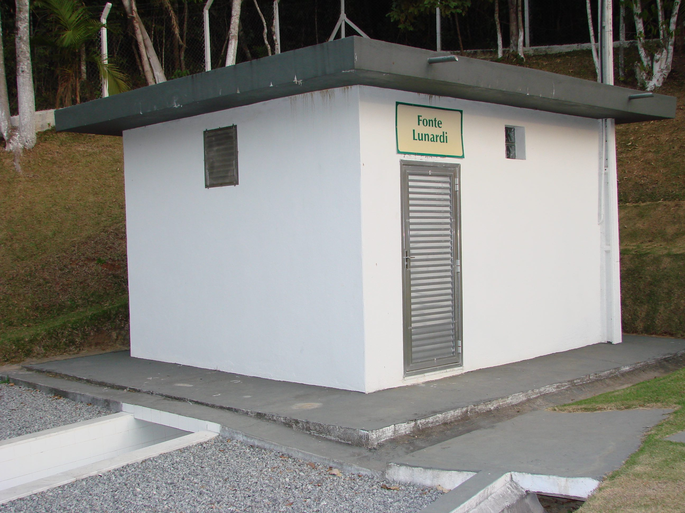
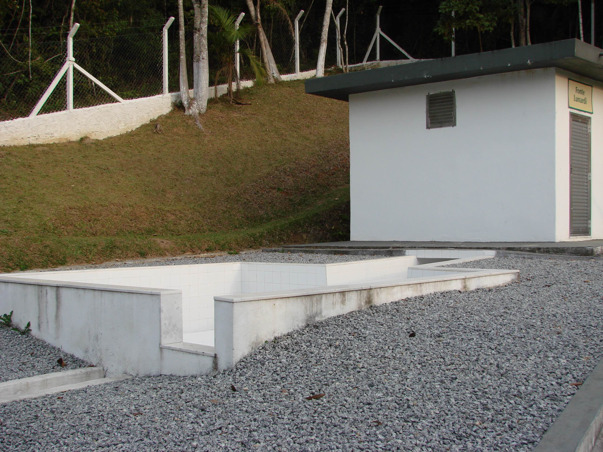
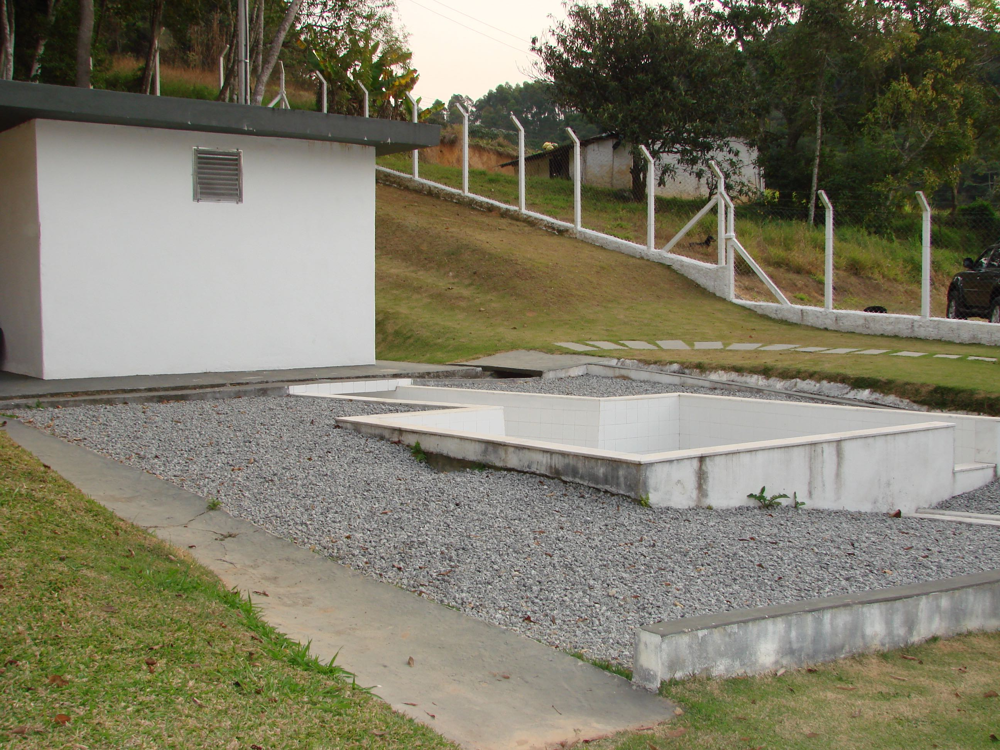

  <!-- Nascente start -->
  <section id="nascente" class="container wow bounceInUp" data-wow-offset="50">
    <div class="row">
      <div class="col-md-12">
        <h2>Fonte Lunardi de Água Natural</h2>
      </div>
      <div class="col-md-6">
        <h4 class="subtitle">O Sítio <span class="my-tooltip" data-toggle="tooltip" title="" data-original-title="Taiaçupeba, Mogi das Cruzes">Do-Re-Mi</span> possui uma nascente de água natual já preparada para a exploração.</h4>
        <br>
        <p>Se tiver interesse em fazer uma parceria para industrializar ou utilizar a água para fins comerciais, entre em contato conosco.</p>
        <p>Direto do granito, a nascente possui com tanque de inox que é conectado através de dutos de inox diretamente a caixa coletora da água.</p>
        <p>Todo ambiente é azuleijado conforme normativa técnica.</p>
        <p>Agende uma visita para conhecer o local.</p>
      </div>

      <div class="col-md-6">
        
      </div>
      <div class="col-md-6">
        
      </div>
      <div class="col-md-6">
        
      </div>

    </div>
  </section>
  <!-- Nascente end -->